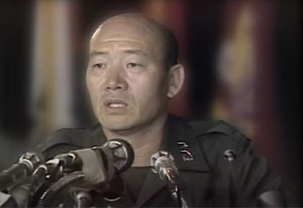
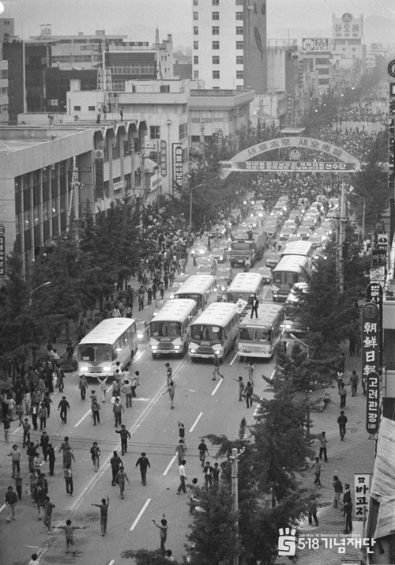
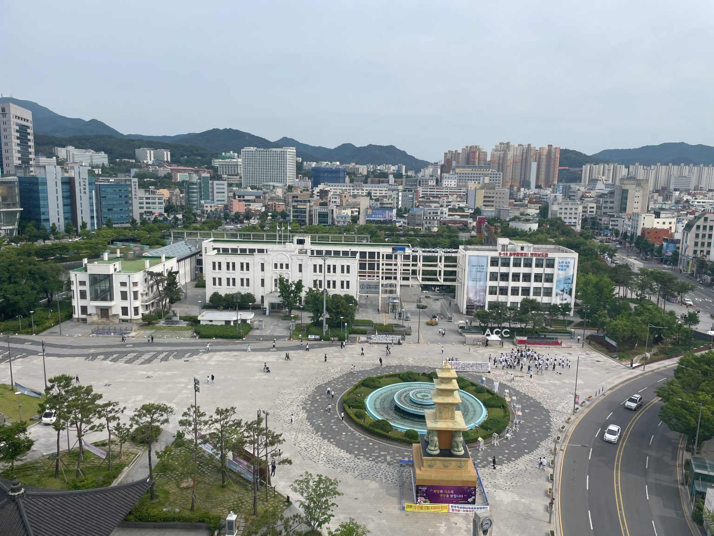

On May 17, the new military junta expanded martial law nationwide,
effectively seizing control of South Korea.
The public, unwilling to accept a new dictatorship,
naturally staged protests calling for the lifting of martial law.

Between May 18 and 19, the 7th and 11th Airborne Brigades were deployed in an attempt to suppress the situation through force. From May 19 to 20, large numbers of citizens gathered on Geumnam-ro, the city's main thoroughfare. Even with the additional deployment of the 3rd Airborne Brigade, the citizens did not disperse.
In response, the martial law troops employed excessive and violent suppression tactics, which only served to further fuel the protests.
During this process, dozens of citizens lost their lives due to assaults by martial law troops. However, due to extreme media suppression, these events remained unknown. Instead, newspapers downplayed the uprising, characterizing it as mere rioting. Enraged by this, there was a incident that some citizens set fire to the MBC broadcasting building.
On May 21, the martial law troops opened fire on the crowd in front of the South Jeolla Provincial Government building; in turn, citizens exercised their right to resistance and organized a civilian militia. Faced with unexpected resistance from the citizen militia, the martial law troops were forced to withdraw from Gwangju.
Citizens set about restoring order in Gwangju after the martial law troops had departed. They also armed themselves using items left behind by the retreating forces. Despite the absence of official law enforcement, the citizens made every effort to maintain order.

However, on May 26, martial law troops re-entered Gwangju. A force of 6,000 soldiers was mobilized, and by the 27th, they had once again surrounded the South Jeolla Provincial Office. The citizen militia fought to the end, but at 6:10 a.m., the South Jeolla Provincial Office was recaptured by the troops.
Although the movement was suppressed, it exerted a profound influence. The June Struggle of 1987 was significantly shaped by it and made a decisive contribution to the democratization of South Korea.
There are varying accounts regarding the number of deaths during the May 18 Democratization Movement. While the official figure stands at 166, this statistic comes from the martial law forces and is highly likely to have been manipulated. It is estimated that the actual death toll ranges from 832 to 2,000, with approximately 3,000 citizens sustaining injuries.